ProCargo closed source
A platform for customs declarations and shipment tracking: registers, parcels, depot cash desks, document generation, and integrations with the Ukrainian customs API, the Cashalot fiscal service and internal ERP and OMS/WMS systems.
- Cut background job execution time roughly 10x. Replaced
dispatchAfterResponse, which silently failed under Nginx/PHP-FPM, removed payload bloat fromBus::chainby passing shipment IDs instead of 192+ serialized job objects, and fixed a cache-lock deadlock. - Removed N+1 queries in the KPI dashboard, cutting report load time by two orders of magnitude.
- Rewrote a core service from scratch after years of accumulated nested conditionals, and consolidated two legacy PDF helpers (900+ and 870+ lines) into one service through a staged 15-step migration, with no production downtime.
- Built the integrations — customs API over SOAP with qualified e-signatures, Cashalot, ERP and OMS/WMS — plus a feature flag switching between two customs modes for instant rollback in production.
- Rebuilt the interface: two full redesigns, role-based admin panel, light and dark themes, localisation, Excel and PDF generation.
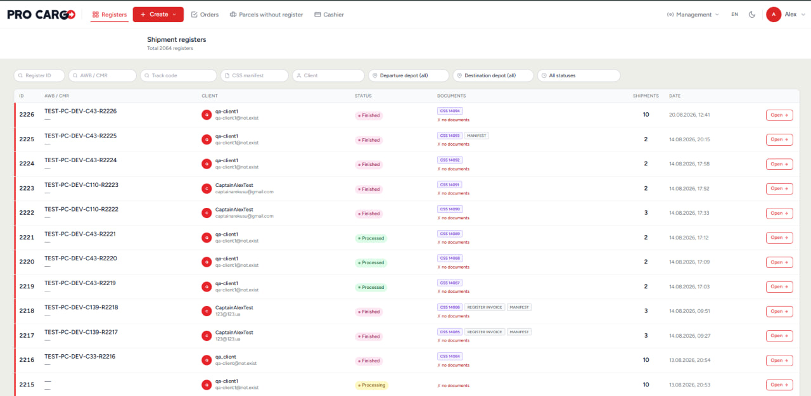
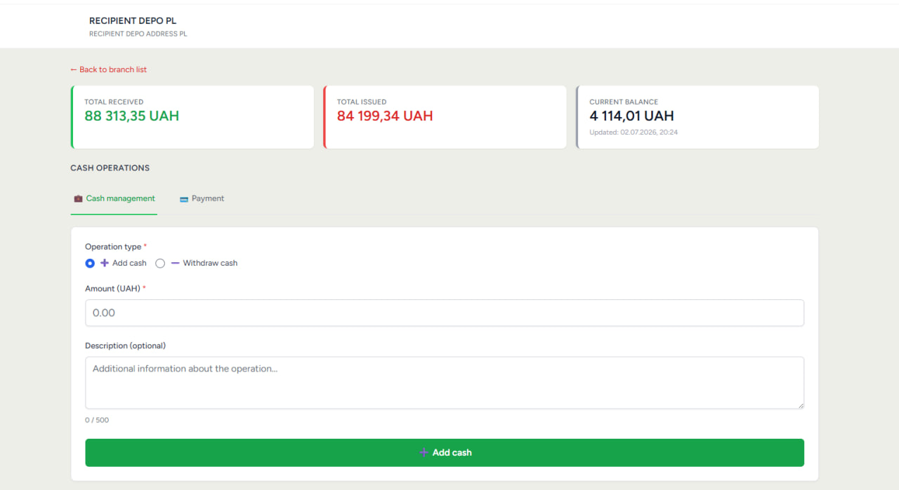
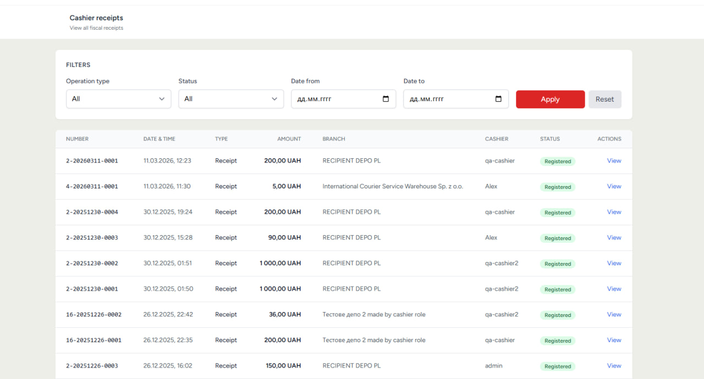
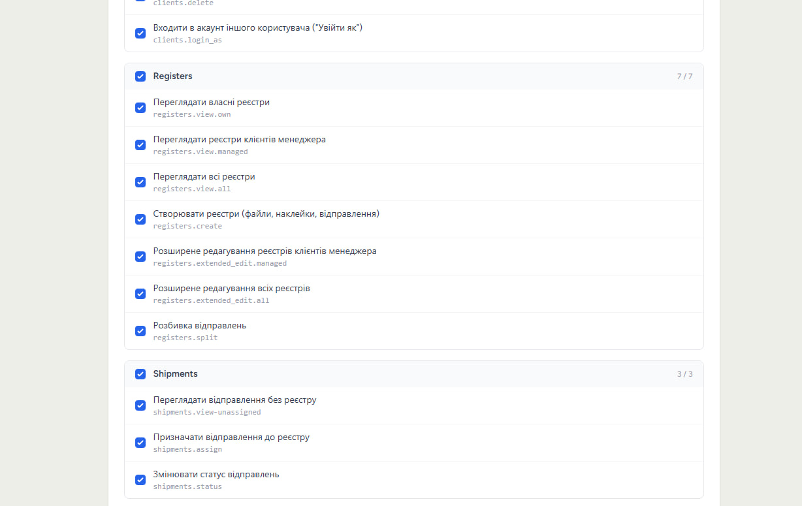
Redesign — drag to compare
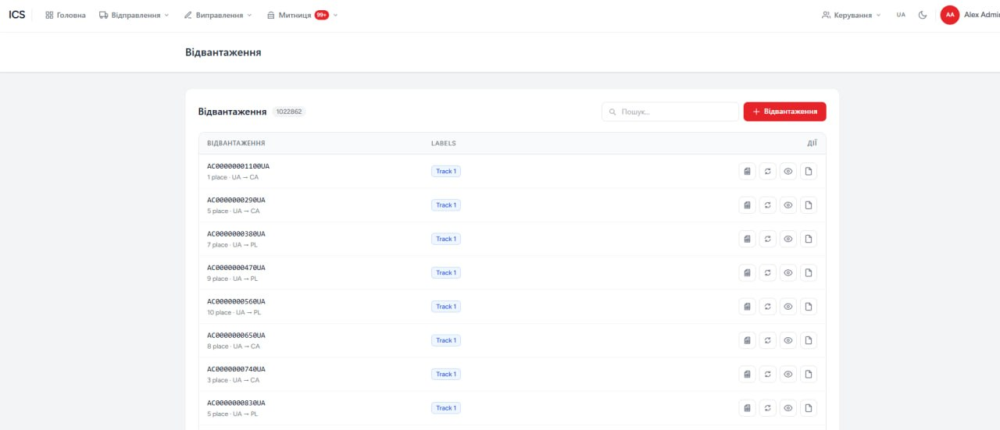
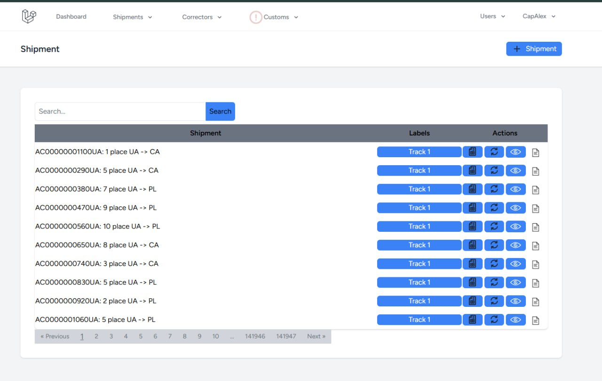
Shipments list: dense button clusters replaced with icon actions, readable type scale, real pagination.
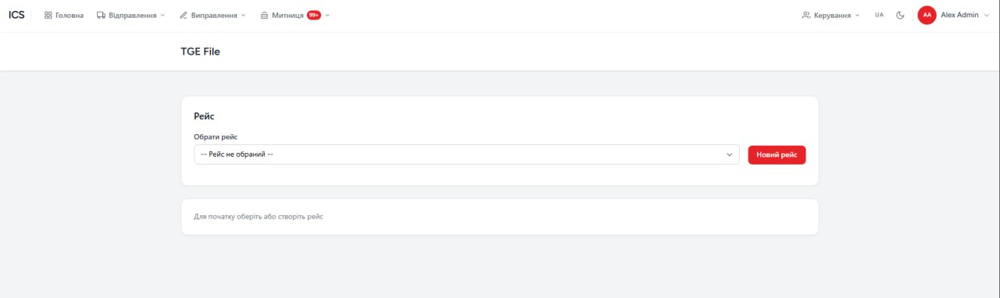
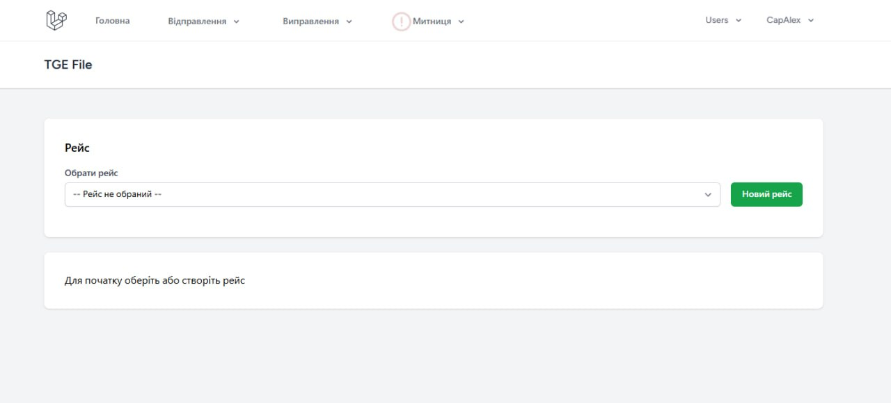
Flight file: consistent navigation, one accent colour instead of four, empty state that says what to do next.
ICS — customs gateway closed source
A gateway between brokers and the Ukrainian customs system. Each tenant gets an isolated workspace with its own branding, users and shipment flow.
- Built multi-tenancy with per-tenant branding — brand and accent colours, text or SVG logo, live preview, applied across the whole interface.
- Two integration modes behind a feature flag: through the gateway, or direct submission with a qualified e-signature. Switching takes one toggle, which made production rollback instant.
- Import and export of shipment registers, project assembly from free shipments, and customs decision handling — refusals and requirements surfaced on the dashboard.
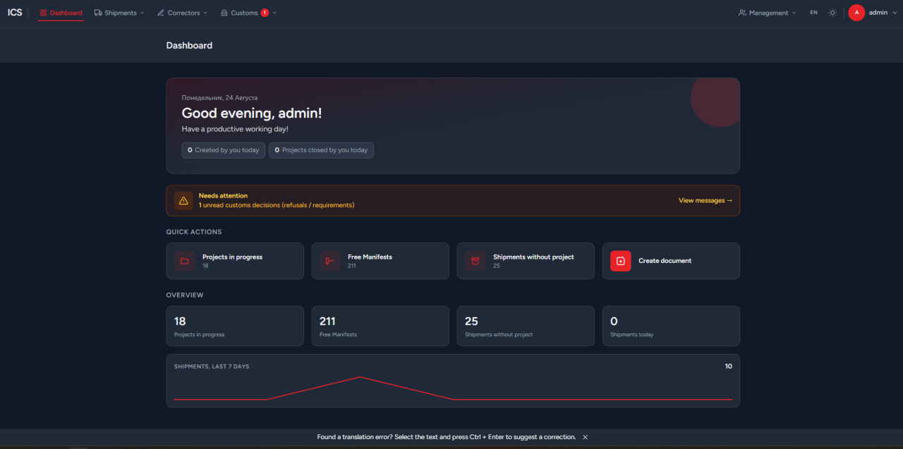
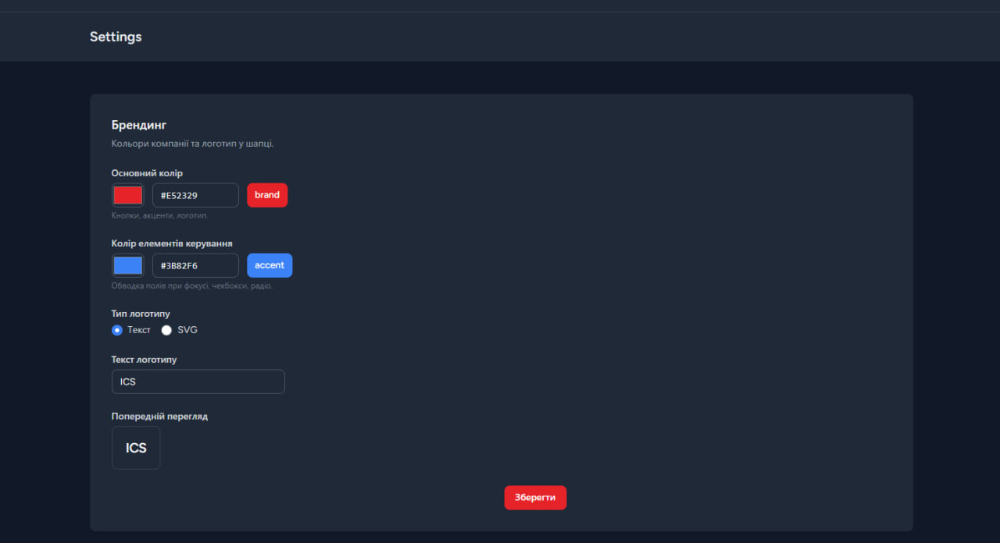
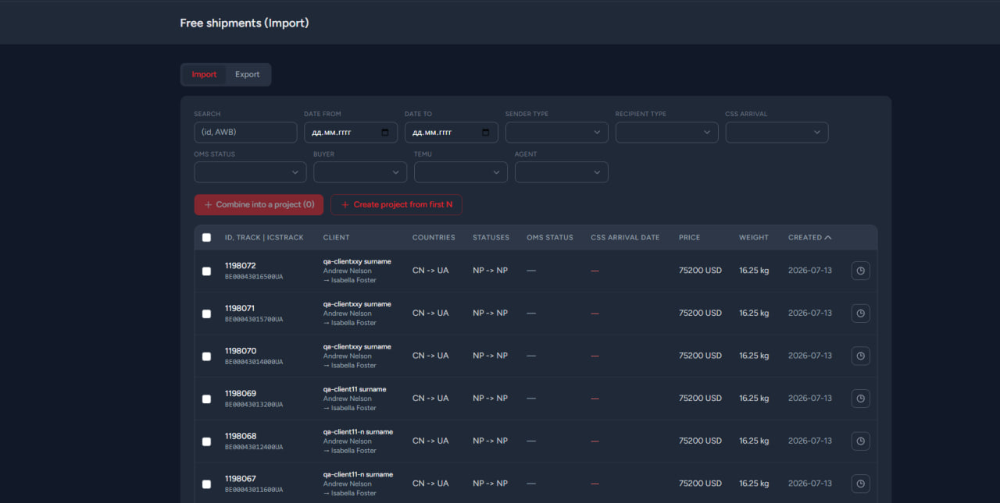
ProCargo public site closed source
The public site runs on WordPress so the team can edit content without a developer, while logged-in users move into the Laravel application without noticing the seam — shared session, shared data, one visual language.
- Built the front end from scratch, including a tariff calculator and country-by-country pricing tables fed from the application.
- Kept shipment creation inside the same flow, so a visitor can go from the landing page to a submitted shipment without a context switch.
- Bilingual content — Ukrainian and English across both the site and the application.
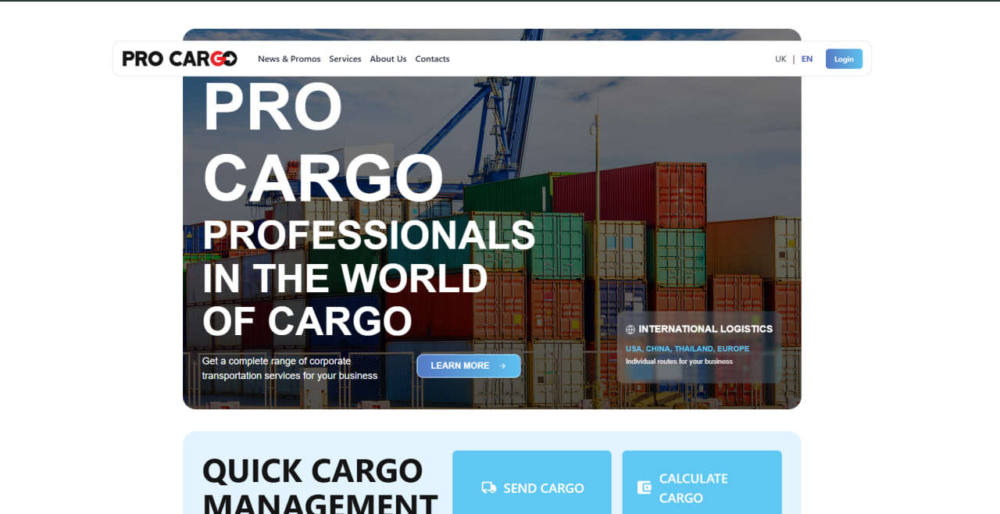
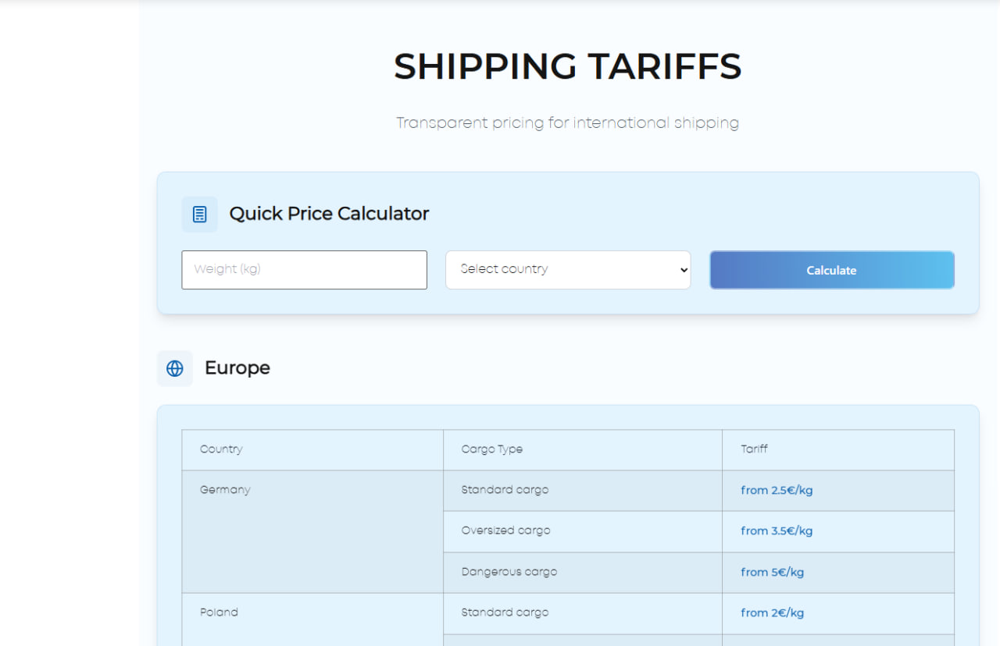
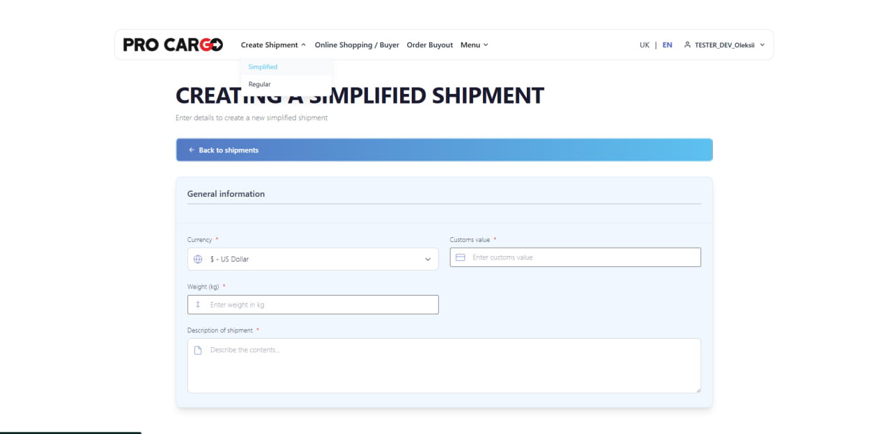
Telegram support bot source on GitHub
Support used to live in a shared chat where requests were lost. The bot turns every request into a tracked ticket in an operator group, with a working schedule, broadcasts and a satisfaction score.
- Ticket lifecycle — a request opens a thread in the operator group with the client's data attached; either side can close it, and the client is then asked to rate the support from 1 to 5.
- Multi-step broadcast wizard — recipient group, message with optional media, date and time, then a preview before scheduling. Cancellable at any step.
- Working schedule — weekday hours plus date overrides for holidays, so out-of-hours requests get an honest answer instead of silence.
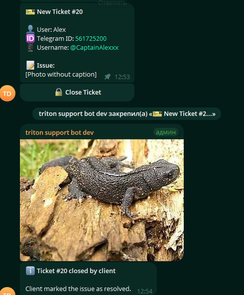
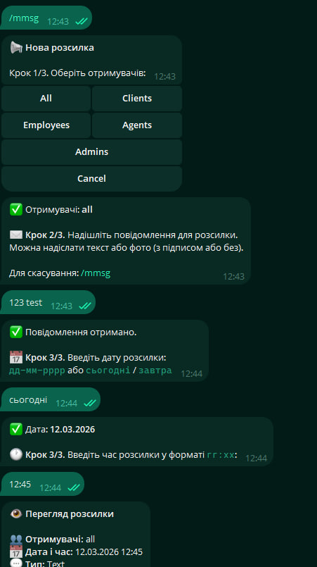
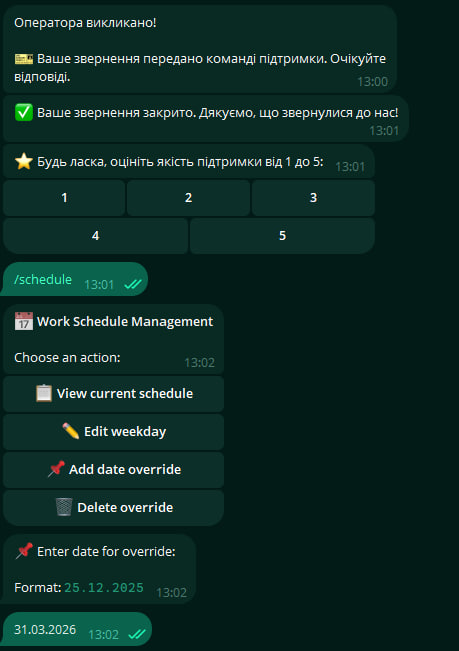